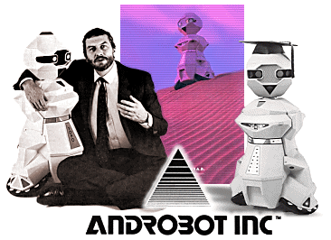
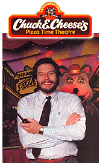
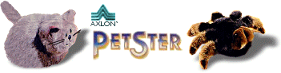
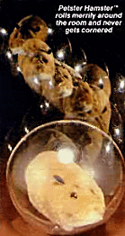
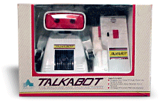

|

Nolan Bushnell wasn't
content with starting Atari. After he sold Atari to
Warner Communications in 1976 to fund expansion, he left
(actually, he had been trying very hard to get himself
fired, and at the end of 1978 he got his wish). As
expected, Warner's terms included a non-competition clause
which was to last until October 1, 1983. Nolan
couldn't be in direct competition with Atari or in any way
directly connected with video games.
In 1983, he formed a new
company called Sente technologies, which would create
video games (this company was folded in 1984 after the
video games crash). Nolan also formed a holding
company in 1982 called Catalyst Technologies, which was a
business incubator for new start-ups. One of these
new companies was Androbot Inc, which originated from a
group of ex-Atari engineers headed by Walter Hammeken.
Nolan was excited about the future of Robots, and at the
January '83 CES with over $1 Million already invested, the
first Androbot's called TOPO and B.O.B. (Brains on Board)
were shown to the public.

Nolan had already been
extremely successful with his "Chuck-E-Cheese" themed
restaurants. This chain was based on the idea that
you could have fun before ordering your pizza (and after
you had eaten it) by playing video games. For kids,
there was the added attraction of the Chuck-E-Cheese
mascots, which were motorised puppets that played-out set
scenes. Although the original idea was created while
Nolan was at Atari, Warner weren't interested and he
bought back the intellectual rights for $500,000 when he
left.
The chain was a massive
success, the first store opened in 1978 (San Jose) and the
company went public in 1981 (establishing Nolan with a net
worth of some $70 Million) - by 1983 there was over 200
Pizza Time Theatres operated in the United States, Canada,
Hong Kong and Australia.
This success ignited the
Androbot project, and through Merrill Lynch, the company
was to go public in
Q2 1983. Problems hit
the project from the start, it wasn't until early 1983
that the first TOPO's shipped and these were unreliable at
the best of times. B.O.B. which was due to be in
production by the ed of 1983, but technical problems
plagued this unit. Only a thousand or so TOPO's were
sold at $795.00 each (TOPO II was priced at nearly $1600,
and only sold a few hundred units).
These were also turbulent
times for Nolan Bushnell's other Catalyst companies.
As Chuck-E-Cheese began to hit hard times (loosing $15
Million in 1983), Nolan had to keep investors happy in his
other projects, while managing the impending troubles on
the horizon.
Another Androbot commercial
deal for a product named Androman (a robotic device which
would connect to an Atari 2600 VCS) never left the
building either, and a deal to sell the project to Atari
for $1 Million eventually fell through. The company
never went public, and a legal and financial mess would
entangle Nolan Bushnell with Merrill Lynch for over 15
years.
Although these robots may have
been ahead of their time in the early 80's (or the
consumer was still behind the times?), Nolan persevered
with the technology, despite set backs in Androbot Inc.

Another Catalyst company
called "Axlon", was producing robotic toys called
"Petsters". These were cute, fluffy robots that
could make noises, recognise a number of hand-claps and
move around in all directions. They even had
blinking LED eyes!

A number of other robotic toys
were also manufactured by Axlon, and the company still
exists today, but only to serve as a royalty collection
service for its previous patents.

Miscellaneous Notes:
::
Branch & Associates of Australia specialized in
prototype development, and assembled many of the early
Axlon prototypes. They are still in the robot
business today.
::
Androbot was imported into the UK by the official
distributor, "Prism". When Androbot Inc. was in
trouble in 1984, TOPO deliveries stopped. Androbot also
announced the shelving of plans to export two other
robots. The company is said to have "experienced
difficulty in raising production to the required levels
for overseas distribution".
U.K. distributor Prism is negotiating for the rights to
manufacture the robots under licence but no decision has
yet been taken. Prism hopes Androbot will not be halting
exports of TOPO permanently; a spokesman for the company
said: "We hope to be able to accept deliveries from
January, or to be in a position to start our own
manufacture."
Copyright 2002 KM/AEX - Do not reprint
without permission.
|